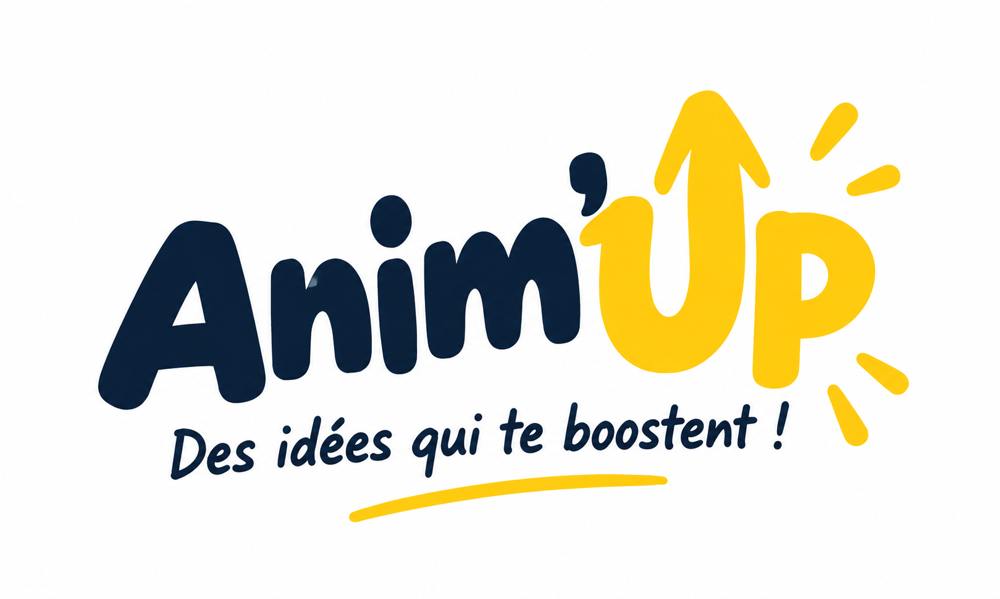

Conditions d’utilisation
Dernière mise à jour : 30 octobre 2026. Ces conditions encadrent l’utilisation de l’application Anim’Up.
À quoi sert Anim’Up
Anim’Up est une boîte à idées pour les animateurs et animatrices : activités, jeux, chants, bricolages et plannings d’animation.
L’application s’adresse à des adultes qui préparent et encadrent des activités pour des enfants. Elle n’est pas destinée à être utilisée par les enfants eux-mêmes.
Ton compte
Tu peux créer un compte avec une adresse e-mail et un mot de passe, ou avec ton compte Apple, Google ou Facebook. Tu t’engages à donner des informations exactes et à garder ton mot de passe confidentiel.
Tu peux supprimer ton compte à tout moment depuis l’onglet Profil. La suppression est définitive et efface tes données personnelles.
Sécurité des enfants : ta responsabilité
Les activités sont des propositions. Tu restes responsable de la sécurité du groupe : adapte chaque activité à l’âge, au nombre d’enfants, au lieu et au matériel dont tu disposes, et respecte la réglementation et le projet pédagogique de ta structure.
Anim’Up ne remplace ni ta formation, ni ton jugement, ni les consignes de ton organisateur.
Contenus et propriété intellectuelle
Les textes, illustrations, fiches et supports imprimables d’Anim’Up sont protégés. Tu peux les utiliser pour animer tes propres groupes. Tu ne peux pas les copier, les revendre ni les diffuser largement sans autorisation.
Les chants renvoient vers des vidéos hébergées par YouTube, qui restent soumises aux conditions de leurs titulaires de droits et de YouTube.
Offre Premium
Une partie d’Anim’Up est gratuite. Anim’Up Premium donne accès à tout le contenu : toutes les activités, les grands jeux, les supports à imprimer et les plannings. Il se prend au mois, à l’année, ou en une seule fois pour un accès à vie, aux prix affichés dans l’application avant l’achat.
Le paiement passe par ton compte Apple ou Google, à la confirmation de l’achat ou à la fin de l’essai gratuit s’il y en a un. Un abonnement se renouvelle automatiquement à la fin de chaque période, sauf si tu le résilies au moins 24 heures avant, dans les réglages de ton compte Apple ou Google. La résiliation prend effet à la fin de la période déjà payée.
Ton accès Premium est lié à ton compte Anim’Up. Si tu changes de téléphone, connecte-toi puis touche « Restaurer mes achats ». Les remboursements suivent les règles d’Apple et de Google.
Disponibilité et responsabilité
Nous faisons de notre mieux pour que l’application soit disponible et exacte, sans pouvoir garantir l’absence d’interruption ou d’erreur. Les contenus peuvent évoluer, être corrigés ou retirés.
Dans la limite permise par la loi, l’éditeur n’est pas responsable des dommages liés à une mauvaise utilisation des activités ou à une indisponibilité temporaire du service.
Évolution de ces conditions
Ces conditions peuvent évoluer. La date de mise à jour figure en haut de cette page. En cas de changement important, tu en seras informé dans l’application.
Elles sont soumises au droit français.
Éditeur et contact
Anim’Up est éditée par Ryan Et-Toumi, entrepreneur individuel.
Pour toute question ou demande liée à tes données ou à ces conditions : contact@animup.fr.